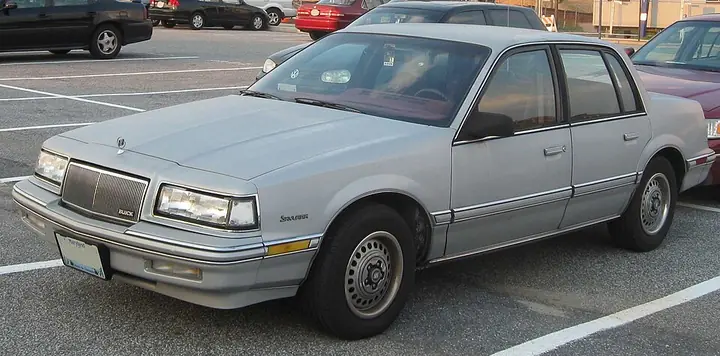
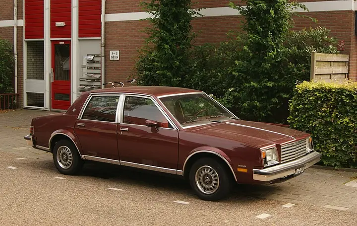
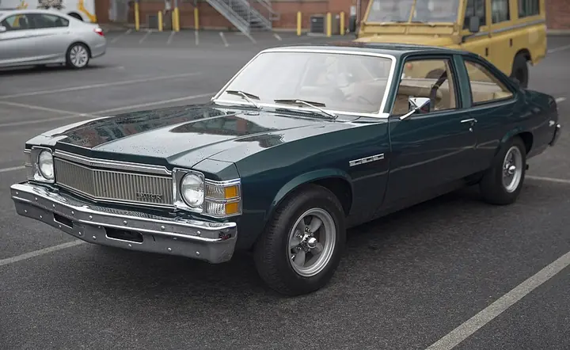
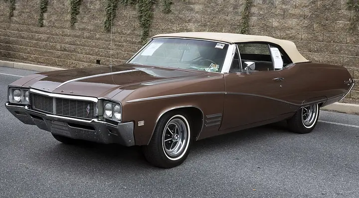
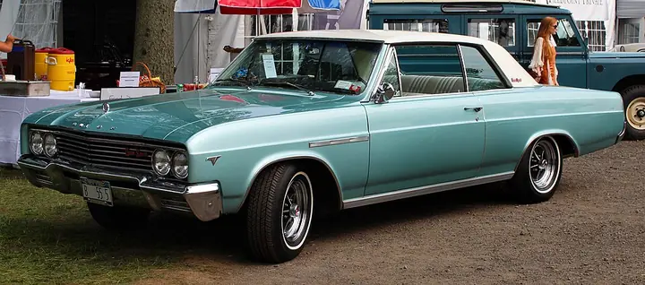
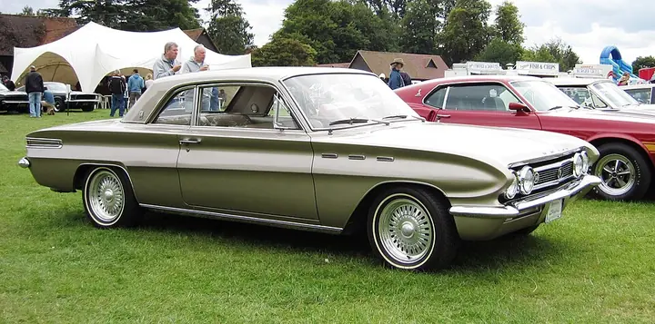

Buick Skylark
Seventh generation (1992–1998) · 1992–1998
Abstract
This generation of the Buick Skylark is a compact, built 1992–1998 in United States: Lansing, Michigan (Lansing Car Assembly). Body styles: 2-door coupe, 4-door sedan. Layout: Transverse front-engine, front-wheel drive. Designed by Wayne Kady.


1Specifications
| Model years | 1992–1998 |
|---|---|
| Assembly | United States: Lansing, Michigan (Lansing Car Assembly) |
| Designer | Wayne Kady |
| Class | Compact |
| Body style | 2-door coupe4-door sedan |
| Layout | Transverse front-engine, front-wheel drive |
| Platform | N-body |
| Engine | 2.3 L L40 I42.3 L LD2 I42.4 L LD9 I43.1 L L82 V63.3 L LG7 V6 |
| Transmission | 3-speed 3T40 automatic4-speed 4T60-E automatic |
| Wheelbase | 103.4 in |
| Length | 189.1 in (1992–95)188.4 in (1996–97 coupe)188.5 in (1996–98 sedan) |
| Width | 67.5 in (1992–93)68.7 in (1994–95)68.2 in (1996–98) |
| Height | 53.2 in (1992–93)53.3 in (1994–95)53.5 in (1996–98) |
| Related | Oldsmobile AchievaOldsmobile CutlassPontiac Grand AmChevrolet BerettaChevrolet CorsicaChevrolet Malibu |
2Previous generations



.jpg){kind=link}



.jpg){kind=link}




3Generation by generation
Length −6% from the first to the last
1968–1972 19685,128 mm
1985–1991 19854,572 mm
1992–1998 19924,803 mm